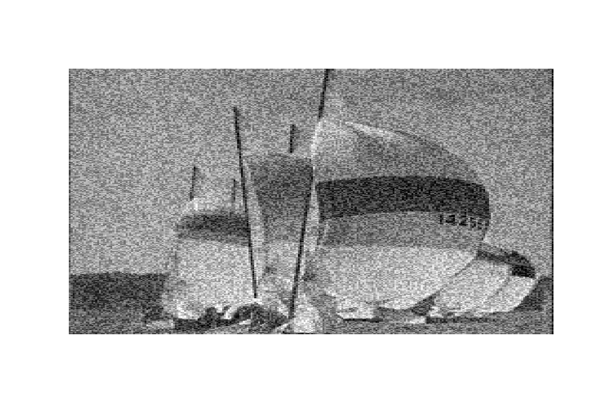
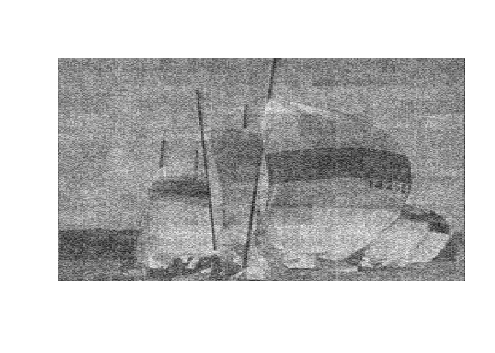
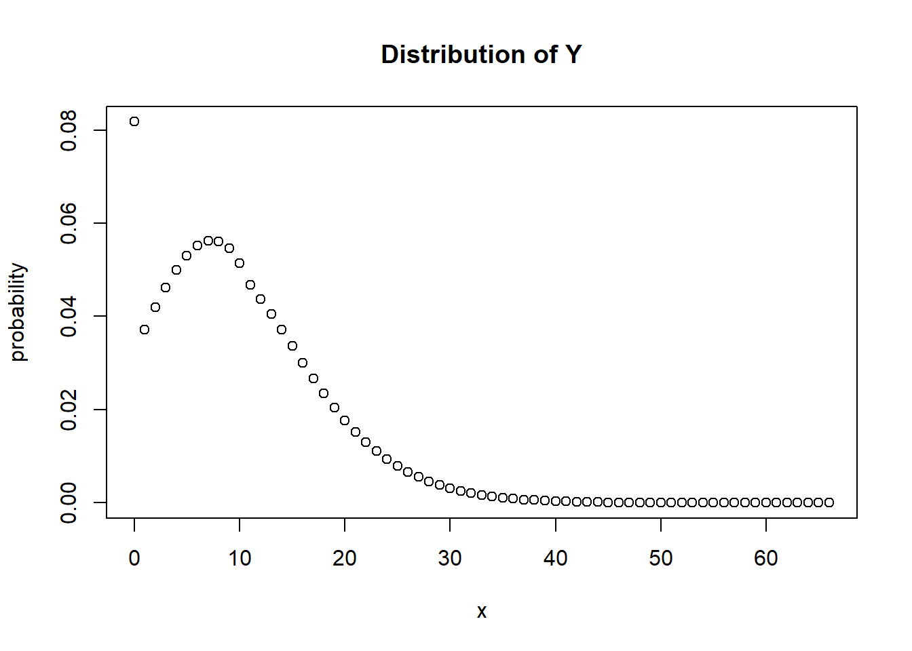
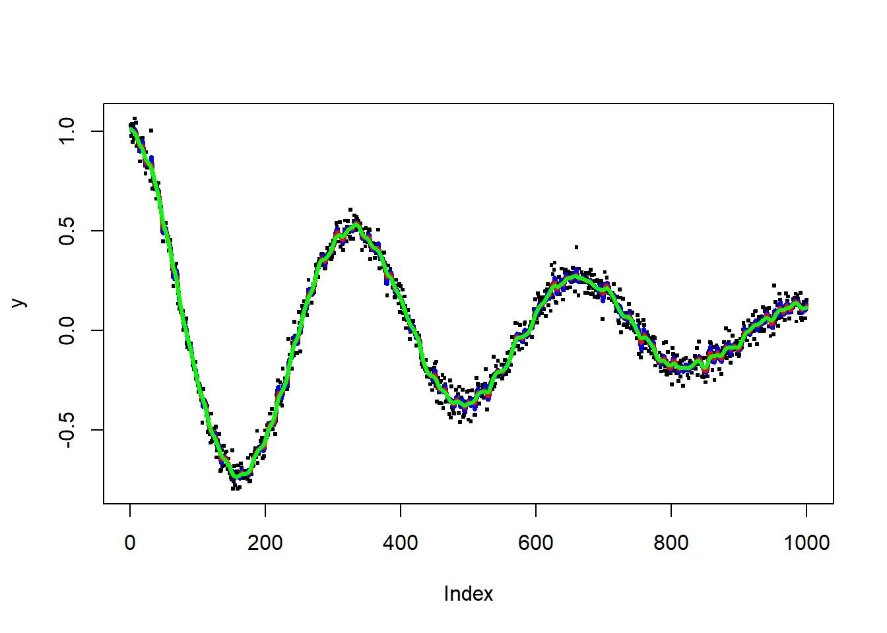
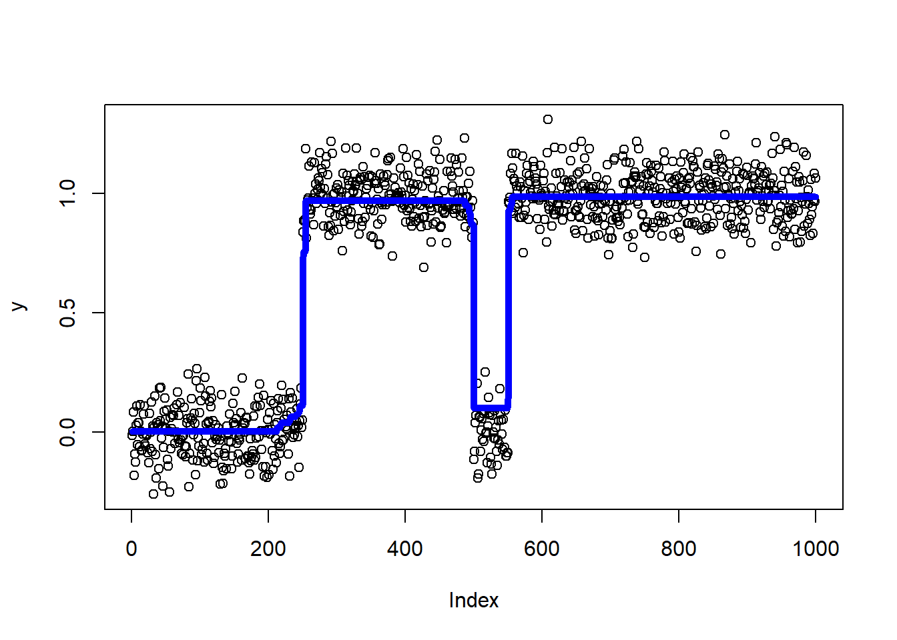
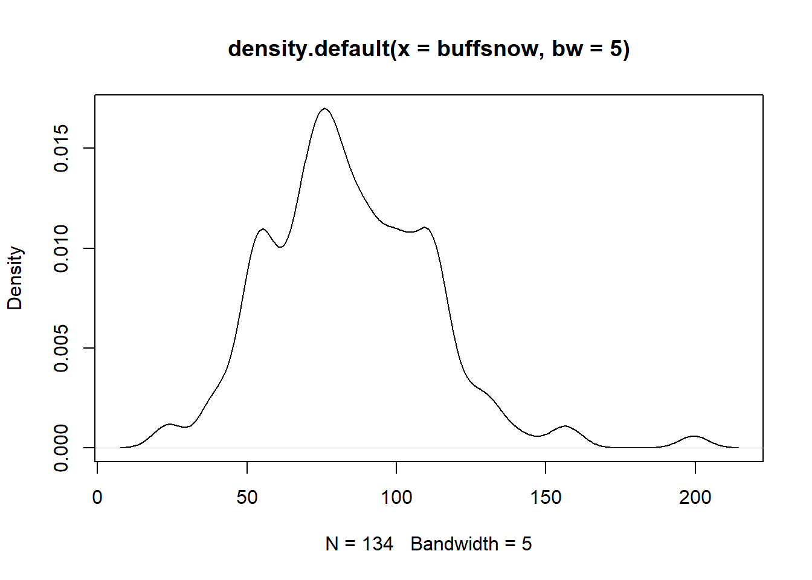
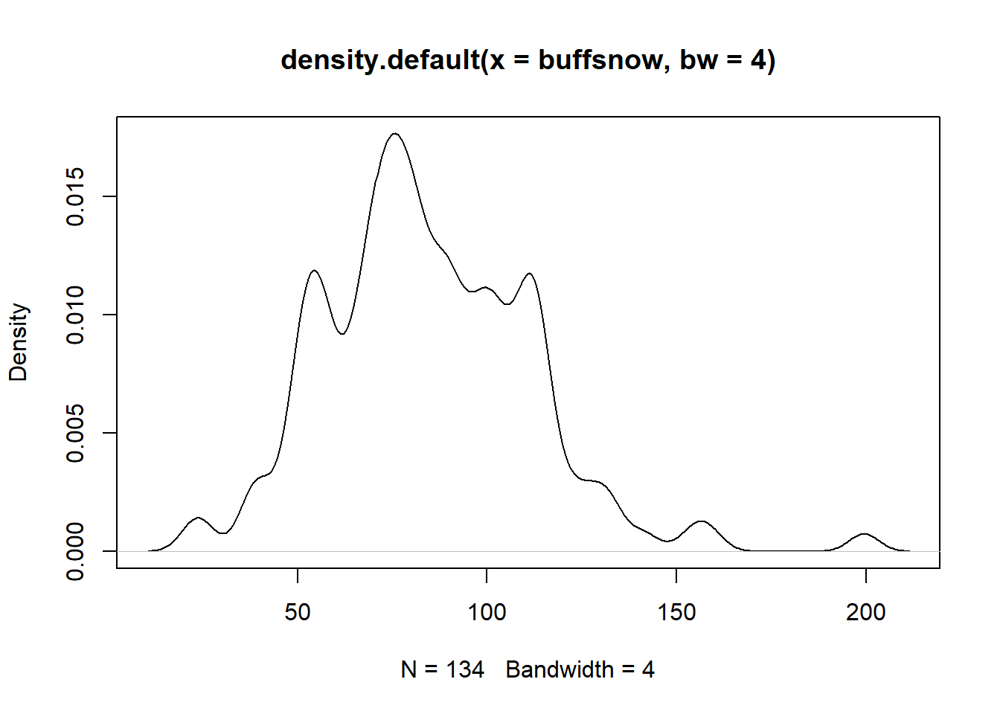

Find the handout for this assignment here
The boat image can be found here
The function fwht2d is provided by professor Knight:
fwht2d <- function(x) {
h <- 1
len <- ncol(x)
while (h < len) {
for (i in seq(1,len,by=h*2)) {
for (j in seq(i,i+h-1)) {
a <- x[,j]
b <- x[,j+h]
x[,j] <- a + b
x[,j+h] <- a - b
}
}
h <- 2*h
}
h <- 1
len <- nrow(x)
while (h < len) {
for (i in seq(1,len,by=h*2)) {
for (j in seq(i,i+h-1)) {
a <- x[j,]
b <- x[j+h,]
x[j,] <- a + b
x[j+h,] <- a - b
}
}
h <- 2*h
}
x
}\[\hat{Z} = H_m Z H_n ; (m = 2^k, n=2^l)\] \[H_m = H^T_m\] \[H_n = H^T_n\] \[H^{-1}_m = H_m / m\] \[H^{-1}_n = H_n / n\] \[ Z = H^{-1}_m \hat{Z} H^{-1}_n \] \[ Z = (H_m / m) \hat{Z} (H_n / n)\] \[ Z = H_m \hat{Z} H_n / (mn)\]
fwht2d : A function to compute Walsh-Hadamard Transform on the vector or matrix x.
hard.thresholding : A function to apply hard-thresholding operator on the vector or matrix X, which lambda is the threshold value.
hard.thresholding <- function(x, lambda) {
u <- fwht2d(x)
u[abs(x) <= lambda] <- 0
y <- fwht2d(u)/length(x)
return(y)
}soft.thresholding : A function to apply soft-thresholding operator on the vector or matrix X, which lambda is the threshold value.soft.thresholding <- function(x, lambda){
u <- fwht2d(x)
u <- sign(u)*(pmax(abs(u)-lambda,0))
y <- fwht2d(u)/length(x)
return(y)
}Original Image with No Thresholding Applied:
boats <- matrix(scan("C:/Users/miche/OneDrive/Desktop/UofT/STA410/Assignment 1/boats.txt"),ncol=256,byrow=T)
image(boats, axes=F, col=grey(seq(0,1,length=256)))
When applying SOFT shrinkage to the image, with threshold = 25:
a <- soft.thresholding(boats, lambda=25)
image(a, axes=F, col=grey(seq(0,1,length=256)))When applying HARD shrinkage to the image, with threshold = 0.35:
b <- hard.thresholding(boats, lambda=0.35)
image(b, axes=F, col=grey(seq(0,1,length=256)))
\[\phi_X(s) = E(s^{X_i})\] \[Y = \sum_{i=1}^{N} X_i\] The probability generating function of Y \[= E(s^Y)\] \[= \sum_{k=j}^{\infty} s^j P(Y=j)\] \[= \sum_{j=1}^{\infty} \sum_{k=1}^{\infty} s^j P(Y=j|N=k) P(N=k)) \] \[= \sum_{k=1}^{\infty} P(N=k)\sum_{j=1}^{\infty} s^j P(Y=j|N=k)\] \[=\sum_{k=1}^{\infty} P(N=k) \sum_{j=1}^{\infty} s^j P(X_1 +...+X_k=j)\] \[=[\sum_{k=1}^{\infty} P(N=k)]\cdot [E(s^{\sum_{i=1}^{k} X_i})]\] \[=[\sum_{k=1}^{\infty} P(N=k)]\cdot [E(s^{X_1})... E(s^{X_k})]\] \[=[\sum_{k=1}^{\infty} P(N=k)]\cdot [\phi(s) \times... \times\phi(s)]\] \[=[\sum_{k=1}^{\infty} P(N=k)]\cdot [\phi(s)]^k\] \[=\sum_{k=1}^{\infty} \frac{\lambda^ke^{-\lambda}}{k!}[\phi(s)]^k\] \[= e^{-\lambda}\sum_{k=1}^{\infty} \frac{[\lambda \cdot \phi(s)]^k}{k!}\] \[= e^{-\lambda} e^{\lambda \cdot \phi(s)} =e^{-\lambda+\lambda\phi(s)}\] \[= e^{-\lambda (1-\phi(s))}\] Since \[g(s)= e^{-\lambda(1-s)}\] The PGF of Y is \[g(\phi(s))= e^{-\lambda (1-\phi(s))} \qquad \forall s \in \mathbf{R}\]
\[ {X_i} \leq \ell\] \[Y=\sum_{i=1}^{N} X_i = X_1+...+X_N \leq N \cdot\ell\] \[P(Y\geq M) \leq P(N \cdot \ell \geq M) = P(N\geq \frac{M}{\ell})\] \[m = \frac{M}{\ell} \Rightarrow M=m\ell\] Substitute \[M=m\ell\]: \[P(Y\geq m\ell) \leq P(N \geq m)\] \[P(Y\geq m\ell) \leq P(N \geq m) \leq \epsilon\] \[If \quad P(N\geq m) \leq \epsilon \quad, then\quad P(Y\geq m\ell) \leq \epsilon \] \[ M \geq m\ell\]
\[P(Y\geq M)=P(s^Y \geq s^M) \leq \frac{E(s^Y)}{s^M} = \frac{exp(- \lambda (1-\phi(s)))}{s^M}\] \[For \quad P(Y \geq M) < \epsilon: \] \[\epsilon = \frac{E(s^Y)}{s^M} = \frac{exp(- \lambda (1-\phi(s)))}{s^M}\] \[Thus, \quad s^M = \frac{E(s^Y)}{\epsilon} = \frac{exp(-\lambda(1-\phi(s)))}{\epsilon}\] \[ln(s^M) = ln[\frac{exp(-\lambda(1-\phi(s)))}{\epsilon}]\] \[ln(s^M) = ln[exp(-\lambda(1-\phi(s)))] - ln(\epsilon)\] \[ M \cdot ln(s)=-ln(\epsilon) -\lambda(1-\phi(s))\] \[M = \inf\limits_{s>1} \frac{-ln(\epsilon)-\lambda(1-\phi(s))}{ln(s)}\]
The R function for evaluating the distribution of Y:
distY <- function(lambda, p, M, epsilon=0.00001) {
l <- length(p)-1
if(missing(M)){
qp <- qpois(1-epsilon, lambda)
M <- 2^ceil(log2(l*qp))
}
#{p(x)}
p <- c(p,rep(0, M-1-l))
#Algorithm step 1: DFT of {p(x)} = phat(j)
phat <- fft(p)
#Algorithm step 2: DFT of Y= g(phat(j))
ghat <- exp(lambda*(phat-1))
#Algorithm step 3: Dist of Y, P(Y=y)
g <- 1/M*Re(fft(ghat, inverse=TRUE))
Y <- list(y=c(0:(M-1)), probdist=g)
return(Y)
}The distribution of \[{X_i}\]: \[p(x)=P(X_i = x)= \frac{11-x}{66} \qquad for \quad x=0,...,10\] Find the distribution of Y where \[\lambda =3 \quad and\quad \epsilon = 10^{-5}\] \[S = \{ 1 < s_1 <s_2 <...<s_k\}\] \[M = \min\limits_{s \in S} \frac{-ln(\epsilon)-\lambda(1-\phi(s))}{ln(s)}\]
M is missing, so we first evaluate M, then find distribution of Y using the distY function:
# Dist of {Xi} = p(x)
p <- (11-c(0:10))/66
# Take a discrete set of point S = {1<s1<...<sk}
s <- c(101:1000)/100
# Find probability generating function, phi(s)
pgf <- p[1]
for (k in 1:10){
pgf <- pgf + (s^k)*p[k+1]
}
# Define M, lambda = 3
M <- min((-log(0.00001)-3*(1-pgf))/log(s))
M## [1] 67.24499Y <- distY(3,p,M)
Y## $y
## [1] 0 1 2 3 4 5 6 7 8 9 10 11 12 13 14 15 16 17 18 19 20 21 22 23 24
## [26] 25 26 27 28 29 30 31 32 33 34 35 36 37 38 39 40 41 42 43 44 45 46 47 48 49
## [51] 50 51 52 53 54 55 56 57 58 59 60 61 62 63 64 65 66
##
## $probdist
## [1] 8.178613e-02 3.717557e-02 4.190695e-02 4.622869e-02 4.998671e-02
## [6] 5.302037e-02 5.516429e-02 5.625044e-02 5.611032e-02 5.457743e-02
## [11] 5.148983e-02 4.669289e-02 4.375972e-02 4.053129e-02 3.710763e-02
## [16] 3.358954e-02 3.007472e-02 2.665363e-02 2.340512e-02 2.039181e-02
## [21] 1.765542e-02 1.521196e-02 1.304704e-02 1.111115e-02 9.399788e-03
## [26] 7.903182e-03 6.607413e-03 5.495610e-03 4.549147e-03 3.748789e-03
## [31] 3.075719e-03 2.512372e-03 2.043011e-03 1.653954e-03 1.333394e-03
## [36] 1.070721e-03 8.565542e-04 6.827321e-04 5.422487e-04 4.291627e-04
## [41] 3.384858e-04 2.660602e-04 2.084391e-04 1.627744e-04 1.267208e-04
## [46] 9.835611e-05 7.611565e-05 5.873388e-05 4.519253e-05 3.467611e-05
## [51] 2.653414e-05 2.024965e-05 1.541330e-05 1.170212e-05 8.862298e-06
## [56] 6.695145e-06 5.045721e-06 3.793620e-06 2.845576e-06 2.129564e-06
## [61] 1.590136e-06 1.184729e-06 8.807669e-07 6.533954e-07 4.837028e-07
## [66] 3.573408e-07 2.634525e-07plot(Y$y, Y$probdist, type="p", main="Distribution of Y",xlab="x", ylab="probability")
Find the handout for this assignment here
Generate a random variable \(X\) from \(g(x;s)\): \[g(x;s) = \frac{exp(x/s)}{s\{1+exp(x/s)\}^2}\] \[G(x;s)= -\frac{1}{1+exp(x/s)}\] \[U=G(x;s)= -\frac{1}{1+exp(x/s)}\] \[exp(x/s)= -\frac{1}{U} -1\] \[X = G^{-1}(U) =s \ ln(\frac{U}{1-U})\]
The density function for \(f(x)\) and \(g(x;s)\) is:
\[f(x) = \frac{1}{\sqrt{2\pi}} exp(\frac{-x^2}{2})\] \[g(x;s) = \frac{exp(x/s)}{s\{1+exp(x/s)\}^2}\] We want to find \(M(s)= \max\limits_{x} \frac{f(x)}{g(x;s)}\). We can find the maximum value of \(ln\frac{f(x)}{g(x;s)}\) by maximizing \(ln f(x) - ln g(x;s)\):
\[ln f(x) - lng(x;s) = -ln(2\pi)-\frac{x^2}{2}-\frac{x}{s}+ln(s)+2ln[exp(x/s)+1]\] \[\frac{\partial}{\partial x} lnf(x)-lng(x;s) = -x-\frac{1}{s}+\frac{2exp(x/s)}{s[exp(x/s)+1]} \] \[\frac{\partial}{\partial x} lnf(x)-lng(x;s) = \frac{s(e^\frac{x}{s}+1)(x+\frac{1}{s})+2e^{\frac{x}{s}}}{s(e^\frac{x}{s}+1)}=0\] \[s(e^\frac{x}{s}+1)(x+\frac{1}{s})+2e^{\frac{x}{s}}=0\] When x=0, the equation is solvable, x=0 is a critical point for this equation. \[\frac{\partial ^2}{\partial ^2 x} lnf(x)-lng(x;s) = \frac{2e^\frac{x}{s}}{s^2(e^\frac{x}{s}+1)^2}-1 =0\] When setting the second derivative to 0, we can solve s for the max/min value of \(lnf(x)-lng(x;s)\):
\[2e^\frac{x}{s}-s^2(e^\frac{x}{s}+1)^2 =0\] Let \(t=e^\frac{x}{s}\), we get:
\[2t - s^2(t+1)^2 =2t-s^2(1+2t+t^2)=0\] We then obtain a quadratic equation for s:
\[-s^2t^2+(-2s^2+2)t+(-s^2)=0\] We then set the determinant \((b^2-4ac)\) as 0:
\[(2-2s^2)^2-4s^4 =0\] \[4-8s^2 =0\] Finally, we get \(s=1/\sqrt{2}\).
\(M(s)\) is minimized at x=0 when \(s=1/\sqrt{2}\), and maximized when \(s\geq 1/\sqrt{2}\) because \(\frac{\partial ^2 M(s)}{\partial x^2} < 0\).
The value of s that minimizes \(M(s)\) is 0.648
s <- c(1:1000)/1000 # generates values 0, 0.001,..., 0.999, 1
x <- c(0:3000)/1000 # generates values 0, 0.001, 0.002 ,..., 2.999, 3
group <- c(rep(0,1000))
for(i in s){
group[i*1000] <- max(dnorm(x)/dlogis(x, location=0, scale=i))}
min_s <- which(group==min(group))/1000
min_s## [1] 0.648Differentiating the objective function with respect to \(\theta_1\),…,\(\theta_n\):
\[\frac{\partial}{\partial \theta_j}\{ \sum_{i=1}^{n} (y_i - \theta_i )^2 + \lambda \sum_{i=2}^{n-1}(\theta_{i+1} - 2\theta_i + \theta_{i-1})^2\}\] \[\begin{align} &= -2(y_1 - \theta_1) +2\lambda(\theta_3 - 2\theta_2 + \theta_1)\\ &= -2(y_2 - \theta_2)+2\lambda(\theta_4 -2\theta_3+\theta_2)-4\lambda(\theta_3-2\theta_2+\theta_1)\\ &= -2(y_j-\theta_j)+2\lambda(\theta_j -2\theta_{j-1} + \theta_{j-2}) -4\lambda(\theta_{j+1}-2\theta_j+\theta_{j-1})\\ &= -2(y_{n-1}-\theta_{n-1})+2\lambda(\theta_{n-1}-2\theta_{n-2}+\theta_{n-3})-4\lambda(\theta_n -2\theta_{n-1}+\theta_{n-2})\\ &= -2(y_n - \theta_n) + 2\lambda(\theta_n - 2\theta_{n-1} + \theta_{n-2}) \end{align}\]
Setting these partial derivatives to 0, it follows that \(\hat{\theta_1},...,\hat{\theta_n}\) satisfy the equations.
\[\begin{align} y_1 &= (1+\lambda)\hat{\theta_1}-2\lambda\hat{\theta_2} +\lambda\hat{\theta_3} \\ y_2 &= -2\lambda\hat{\theta_1}+(1+5\lambda)\hat{\theta_2}-4\lambda\hat{\theta_3}+\lambda\hat{\theta_4}\\ y_j &= \lambda\hat{\theta_{j-2}}-4\lambda\hat{\theta_{j-1}}+(1+6\lambda)\hat{\theta_j}-4\lambda\hat{\theta_{j+1}}+\lambda\hat{\theta_{j+2}} \qquad for \quad j = 3,...,n-2\\ y_{n-1} &= \lambda\hat{\theta_{n-3}} - 4\lambda\hat{\theta_{n-2}} +(1+5\lambda)\hat{\theta_{n-1}} - 2\lambda\hat{\theta_n}\\ y_n &= \lambda\hat{\theta_{n-2}} - 2\lambda\hat{\theta_{n-1}} +(1+\lambda)\hat{\theta_n} \end{align}\]
The linear equation can be written as \[\mathbf{y} = \mathbf{A_\lambda} \hat{\theta} \]:
\[\mathbf{A_\lambda} = \left[\begin{array} {rrr} 1+\lambda & -2\lambda & \lambda & ... & 0 & 0 \\ -2\lambda & 1+5\lambda & -4\lambda & ... & 0 & 0 \\ \lambda & -4\lambda & 1+6\lambda & ... & 0 & 0 \\ 0 & \lambda & -4\lambda & ... & 0 & 0 \\ 0 & 0 & \lambda & ... & 0 & 0\\ \vdots & \ddots & \ddots & \ddots & \cdots & \vdots \\ 0 & 0& 0 & ...& \lambda & 0\\ 0 &0&0&...& -4\lambda & \lambda \\ 0&0&0&...& 1+5\lambda & -2\lambda\\ 0&0&0&...& -2\lambda & 1+\lambda\\ \end{array}\right]\]
To show \(\lambda=1\), we need to prove \(\mathbf{A_\lambda} y=y\). We subsittute \(y_i=ax_i +b \quad\forall i\) into the equation:
\[\mathbf{A_\lambda y}=\left[\begin{array} {rrr} 1+\lambda & -2\lambda & \lambda & ... & 0 & 0 \\ -2\lambda & 1+5\lambda & -4\lambda & ... & 0 & 0 \\ \lambda & -4\lambda & 1+6\lambda & ... & 0 & 0 \\ 0 & \lambda & -4\lambda & ... & 0 & 0 \\ 0 & 0 & \lambda & ... & 0 & 0\\ \vdots & \ddots & \ddots & \ddots & \cdots & \vdots \\ 0 & 0& 0 & ...& \lambda & 0\\ 0 &0&0&...& -4\lambda & \lambda \\ 0&0&0&...& 1+5\lambda & -2\lambda\\ 0&0&0&...& -2\lambda & 1+\lambda\\ \end{array}\right] \left[\begin{array} {rrr} a+b\\ 2a+b\\ \vdots\\ \vdots\\ na+b \end{array}\right]\]
Then we have:
Gauss-Seidel algorithm can be used to compute the estimates:
- The matrix A is strict diagonally dominant, so both the Gauss-Seidel and Jacobi algorithms converge.
- The objective function is a sum of two quadratic functions in \(\theta_1\),…,\(\theta_n\), so the Hessian matrix = sum of the Hessians of the two quadratic functions.
- The Hessian matrix of the first term \(\sum_{i=1}^{n} (y_i-\theta_i)^2\) is \(2I\), so H is positive definite.
- The second term \(\sum_{i=2}^{n-1}(\theta_{i+1} - 2\theta_i + \theta_{i-1})^2\) is non-negative, so it has a positive definite Hessian. - The matrix A is positive definite.
The following is a template of R function used to estimate the parameters:
seidel <- function(y,lambda,theta,max.iter=50,eps=1.e-6) {
n <- length(y)
# Define initial estimates if unspecified
if (missing(theta)) theta <- y
# Compute objective function for initial estimates
obj <- sum((y-theta)^2)+lambda*sum(diff(diff(theta))^2)
# The function diff(diff(theta)) computes second differences of the vector
# theta
no.conv <- T
# You will need to define convergence (no.conv==F) somehow - either in
# terms of the objective function or in terms of the estimates
# Do Gauss-Seidel iteration until convergence or until max.iter iterations
iter <- 0
theta.old <- theta
while(no.conv) {
theta[1] <- (y[1]+2*lambda*theta[2]-lambda*theta[3])/(1+lambda)
theta[2] <- (y[2]+2*lambda*theta[1]+4*lambda*theta[3]-lambda*theta[4])/(1+5*lambda)
# Update theta[2],..., theta[n-1]
for (j in 3:(n-2)) {
theta[j] <- (y[j]-lambda*theta[j-2]+4*lambda*theta[j-1]+4*lambda*theta[j+1]-lambda*theta[j+2])/(1+6*lambda)
}
theta[n-1] <- (y[n-1]-lambda*theta[n-3]+4*lambda*theta[n-2]+2*lambda*theta[n])/(1+5*lambda)
theta[n] <- (y[n]-lambda*theta[n-2]+2*lambda*theta[n-1])/(1+lambda)
# Compute new objective function for current estimates
obj.new <- sum((y-theta)^2)+lambda*sum(diff(diff(theta))^2)
iter <- iter + 1
# Now set no.conv to F if either convergence or iter=max.iter
# and update the value of the objective function variable obj
if (abs(obj.new-obj)<eps) no.conv <- F
if (iter==max.iter) no.conv <- F
obj <- obj.new
theta.old <- theta
}
r <- list(y=y,theta=theta,obj=obj,niters=iter)
r
}The following commands produce estimates of \(\theta_1 ,...,\theta_{1000}\) for \(\lambda = 1,10,100\). Matrix A becomes less diagonally dominant for larger \(\lambda\), so the Gauss-seidel algorithm will take longer to converge. Maximum iterations increases as \(\lambda\) increases.
x <- c(1:1000)/1000
y <- cos(6*pi*x)*exp(-2*x) + rnorm(1000,0,0.05)
gs1 <- seidel(y, lambda=1)
gs10 <- seidel(y, lambda=10, theta=gs1$theta, max.iter=100)
gs100 <- seidel(y, lambda=100, theta=gs10$theta, max.iter=1000)
plot(y,pch=".", cex=3)
lines(gs1$theta, col="blue", lwd=3)
lines(gs10$theta, col="red", lwd=3)
lines(gs100$theta, col="green", lwd=3)
The plot above shows that as \(\lambda\) increases, the estimate fluctuates at a decreasing range.
Find the handout for this assignment here
The function leverage is provided by professor Knight.
\[Var(\widehat{tr(A))} = E[(\mathbf{V}^T A \mathbf{V})^2]-tr(A)^2\] It suffices to minimize \[E[(\mathbf{V}^T A \mathbf{V})^2]= \sum_{i=1}^{n}\sum_{j=1}^{n}\sum_{k=1}^{n}\sum_{\ell=1}^{n} a_{ij} a_{k\ell} E(V_i V_j V_k V_\ell)\]
Assume that \(V_1,...,V_n\) are independent with mean 0 and variance 1, \(E(V_i V_j V_k V_\ell) = 0 \quad or \quad 1\) unless \(i=j=k=\ell\)
Therefore, \[E[(\mathbf{V}^T A \mathbf{V})^2]= \sum_{i=1}^{n} a_{ii}^2 E(V_i^4) + constant\]
This suffices to find a distribution with mean 0 and variance 1 with minimal fourth moment: \[E(V_i^4) = Var(V_i^2) +1\]
\[H= \left(\begin{array} {rr} H_{11} & H_{12} \\ H_{21} & H_{22} \end{array}\right)\] \[\left(\begin{array} {rr} H_{11} & H_{12} \\ H_{21} & H_{22} \end{array}\right) \left(\begin{array} {rr} \mathbf{V} \\ \mathbf{0} \end{array}\right) = \left(\begin{array} {rr} H_{11}\times\mathbf{V} + H_{12} \times\mathbf{0} \\ H_{21}\times\mathbf{V} + H_{22} \times\mathbf{0} \end{array}\right) = \left(\begin{array} {rr} H_{11}\mathbf{V} \\ H_{21}\mathbf{V} \end{array}\right)\] \[\left(\begin{array} {rr} H_{11} & H_{12} \\ H_{21} & H_{22} \end{array}\right) \left(\begin{array} {rr} H_{11}^{k-1}\mathbf{V} \\ \mathbf{0} \end{array}\right) = \left(\begin{array} {rr} H_{11}\times H_{11}^{k-1}\mathbf{V} + H_{12} \times\mathbf{0} \\ H_{21}\times H_{11}^{k-1}\mathbf{V} + H_{22} \times\mathbf{0} \end{array}\right) = \left(\begin{array} {rr} H_{11}^k\mathbf{V} \\ H_{21}H_{11}^{k-1}\mathbf{V} \end{array}\right)\]
To compute the leverage:
library(splines) # loads the library of functions to compute B-splines
leverage <- function(x,w,r=10,m=100) {
qrx <- qr(x)
n <- nrow(x)
lev <- NULL
for (i in 1:m) {
v <- ifelse(runif(n)>0.5,1,-1)
v[-w] <- 0
v0 <- qr.fitted(qrx,v)
f <- v0
for (j in 2:r) {
v0[-w] <- 0
v0 <- qr.fitted(qrx,v0)
f <- f + v0/j
}
lev <- c(lev,sum(v*f))
}
std.err <- exp(-mean(lev))*sd(lev)/sqrt(m)
lev <- 1 - exp(-mean(lev))
r <- list(lev=lev,std.err=std.err)
r
}
set.seed(10)
x <- c(1:1000)/1000
X1 <- 1
for (i in 1:10){
X1 <- cbind(X1,x^i)
}
X2 <- cbind(1,bs(x,df=10))
w <- c(1:100)
leverage(X1[,3:11],w)## $lev
## [1] 0.5627272
##
## $std.err
## [1] 0.04305275leverage(X2[,3:11],w)## $lev
## [1] 0.2043459
##
## $std.err
## [1] 0.02491546The points in first design \(g_1(x)\) have greater leverage.
X has a Gamma distribution, so \(E(X)= \frac{\alpha}{\lambda}\) and \(Var(X)=\frac{\alpha}{\lambda^2}\)
Arranging the variables gives us: \(\alpha= \frac{E(X)^2}{Var(X)} \qquad \lambda= \frac{E(X)}{Var(X)}\)
Then, if the sample mean is \(\bar{x}\) and the sample variance of \(x_1,...,x_n\) is \(s^2\), the method of moments estimators are \(\widehat\alpha = \frac{\bar{x}^2}{s^2}\) and \(\widehat{\lambda}=\frac{\bar{x}}{s^2}\)
Let \(\phi(\alpha)\) be the digamma function and \(\phi'(\alpha)\) be the trigamma function. They are the first two derivatives of ln\(\Gamma(\alpha)\).
The score vector for fixed \(\alpha\) and \(\lambda\):
\[ \left(\begin{array}
{r}
\sum_{i=1}^{n} ln(x_i) + n[ln(\lambda)-\phi(\alpha)] \\
\frac{n\alpha}{\lambda} - \sum_{i=1}^{n} x_i
\end{array}\right)\]
The Fisher information matrix:
\[\left(\begin{array}
{rrr}
n\phi'(\alpha) & \frac{-n}{\lambda} \\
\frac{-n}{\lambda} & \frac{n\alpha}{\lambda^2}
\end{array}\right)\]
R function that compute MLE:
mle.gamma <- function(x, eps=1.e-6){
n <- length(x)
lambda <- mean(x)/var(x)
alpha <- mean(x)^2/var(x)
alpha1 <- alpha
theta <- c(alpha,lambda)
theta0 <- theta
s1 <- sum(log(x))+n*(log(lambda)-digamma(alpha))
s2 <- n*alpha/lambda-sum(x)
score <- c(s1,s2)
pstep <- 0
iter <- 0
while (max(abs(score)) > eps){
fisher11 <- n*trigamma(alpha)
fisher12 <- -n/lambda
fisher22 <- n*alpha/lambda^2
fisher <- matrix(c(fisher11,fisher12,fisher12,fisher22),ncol=2)
mtp <- 1
repeat {
theta1 <- theta + mtp*solve(fisher,score)
if (min(theta1) <=0){
mtp <- 0.9*mtp
pstep <- pstep+1
}
else break
}
theta <- theta1
alpha <- theta[1]
lambda <- theta[2]
s1 <- sum(log(x)) + n*(log(lambda)-digamma(alpha))
s2 <- n*alpha/lambda-sum(x)
score <- c(s1,s2)
iter <- iter+1
if (iter==1) theta2 <- theta
}
fisher11<- n*trigamma(alpha)
fisher12 <- -n/lambda
fisher22 <- n*alpha/lambda^2
fisher <- matrix(c(fisher11,fisher12,fisher12,fisher22),ncol=2)
cat("number of iterations =", iter, "\n")
r <- list(mle=theta, varcovar=solve(fisher))
r
}When \(n=100\) with \(\alpha=0.5\) and \(\lambda=1\):
x <- rgamma(100, shape=0.5)
r <- mle.gamma(x)## number of iterations = 5r## $mle
## [1] 0.4326962 0.8692845
##
## $varcovar
## [,1] [,2]
## [1,] 0.002485084 0.004992521
## [2,] 0.004992521 0.027493832When \(n=100\) with \(\alpha=10\) and \(\lambda=1\):
x <- rgamma(100, shape=10)
r <- mle.gamma(x)## number of iterations = 3r## $mle
## [1] 10.111166 1.003178
##
## $varcovar
## [,1] [,2]
## [1,] 1.9795797 0.19640378
## [2,] 0.1964038 0.02048148Find the handout for this assignment here
\[\theta_2 = (\theta_2-\theta_1)+\theta_1 = \phi_2 + \theta_1\] Therefore, \[\begin{align} \theta_k &= \theta_1 + (\theta_2-\theta_1) + (\theta_3-\theta_2) + (\theta_4-\theta_3) + ... + (\theta_k-\theta_{k-1}) \\ &= \theta_1 + \sum_{i=2}^{k} \phi_i \end{align}\]
We first differentiate the objective function with respect to \(\theta_1\):
\[\frac{\partial}{\partial \theta_1} [\sum_{i=1}^{n}(y_i - \theta_1 - \sum_{j=2}^{i} \phi_j)^2 + \lambda \sum_{i=2}^{n} |\phi_i|]=-2\sum_{i=1}^{n}(y_i-\theta_1-\sum_{j=2}^{i}\phi_j)\]
Then, we make the above partial derivative to be equal to 0. For fixed values of \(\phi_2,...,\phi_n\), the objective function is minimized at:
\[\theta_1 = \frac{1}{n} \sum_{i=1}^{n}(y_i - \sum_{j=2}^{i}\phi_j)\]
The objective function can be expressed as a sum of differentiable and a non-differentiable convex function.
The derivative of the differentiable function:
\[-2\sum_{i=j}^{n}(y_i-\theta_1-\sum_{k=2}^{i}\phi_k)\]
Then, the subgradient of \(\lambda|\phi_j|\) in the non-differetiable function translated by the derivative of the differentiable function, is:
\[\begin{align}
\partial \lambda|\phi_j|= \lambda\partial|\phi_j|&= +\lambda \quad if \quad \phi_j >0\\
&= [-\lambda,+\lambda] \quad if \quad \phi_j =0\\
&= -\lambda \quad if \quad \phi_j <0
\end{align}\]
The first terms \(j-1\) of the summation are independent of \(\phi_j\), thus the convex function is minimized if only if the subgradient at the minimizing point contains zero. The convex function is minimized at \(\phi_j=0\) if:
\[2\sum_{i=j}^{n} (y_i - \theta_1- \sum_{k=2,k\neq j}^{i} \phi_k) \quad \in[-\lambda,+\lambda]\] leading to \[\phi_j = 0 \quad if \quad |\sum_{i=j}^{n} (y_i - \theta_1- \sum_{k=2,k\neq j}^{i} \phi_k)| \leq \frac{\lambda}{2}\]
If that condition is not satisfied, we have:
\[\phi_j = \frac{1}{n-(j-1)}[\sum_{i=j}^{n}(y_i-\theta_1-\sum_{k=2,k\neq j}^{i} \phi_k)-\frac{\lambda}{2}] \quad if \quad \sum_{i=j}^{n}(y_i-\theta_1-\sum_{k=2,k\neq j}^{i} \phi_k) > \frac{\lambda}{2}\]
Else if:
\[\phi_j = \frac{1}{n-(j-1)}[\sum_{i=j}^{n}(y_i-\theta_1-\sum_{k=2,k\neq j}^{i} \phi_k)+\frac{\lambda}{2}] \quad if \quad \sum_{i=j}^{n}(y_i-\theta_1-\sum_{k=2,k\neq j}^{i} \phi_k) < -\frac{\lambda}{2}\]
A function in R implementing the coordinate descent algorithm suggested in parts (b) and (c):
coor.des <- function(y,lambda,theta, max.iter=500, eps=1.e-3){
n <- length(y)
if (missing(theta)) theta <- y
theta <- c(theta[1], diff(theta))
yhat <- cumsum(theta)
obj <- sum((yhat)^2) + lambda*sum(abs(theta[2:n]))
no.conv <- T
iter <- 0
while(no.conv){
theta[1] <- mean(y-yhat + theta[1])
yhat <- cumsum(theta)
for (j in 2:n){
yj <- y[j:n] - yhat[j:n] + theta[j]
myj <- mean(yj)
lambdaj <- lambda/(2*(n-j+1))
if (abs(myj) <= lambdaj) theta[j] <- 0
else theta[j] <- myj-lambdaj*sign(myj)
yhat <- cumsum(theta)
}
new.obj <- sum((y-yhat)^2) + lambda*sum(abs(theta[2:n]))
iter <- iter + 1
if (abs(new.obj - obj) < eps) no.conv <- F
if (iter==max.iter) no.conv <- F
obj <- new.obj
}
r <- list(y=y, theta=yhat, numberofiter=iter, obj=obj)
r
}Test the function on the data generated as follows,and the figure below shows the data with the estimates for \(\lambda=5\):
y <- c(rep(0,250),rep(1,250),rep(0,50),rep(1,450)) + rnorm(1000,0,0.1)
m1 <- coor.des(y, lambda=5, max.iter=500)
plot(y)
lines(m1$theta, lwd=5, col="blue")
We first decompose the log-likelihood into two parts:
\[lnL=\sum_{k=1}^{m}\sum_{i=1}^{n} u_{ik}ln[f_k(x_i)]+\sum_{k=1}^{m}\sum_{i=1}^{n} u_{ik}ln(\lambda_k)\]
With the constraint \(\lambda_1 +...+\lambda_m =1\), we maximize \(\lambda_k\) and have:
\[\hat \lambda_k = \frac{1}{n}\sum_{i=1}^{n} u_{ik}\]
Then we maximize \(\mu_k\):
\[\hat\mu_k = (\sum_{i=1}^{n} u_{ik})^{-1}\sum_{i=1}^{n} u_{ik}x_i\] Maximazing over \(\sigma_k^2\), we have:
\[ \hat\sigma_k^2=(\sum_{i=1}^{n} u_{ik})^{-1}\sum_{i=1}^{n} u_{ik}(x_i-\hat\mu_k)^2\]
The unobserved \(\{u_{ik}\}\) in EM algorithm is estimated by \[\hat u_{ik} = \frac{\hat\lambda_k \hat f_k(x_i)}{\hat\lambda_1\hat f_1(x_i)+...+\hat\lambda_m\hat f_m(x_i)}\]
R function that uses the EM algorithm to compute the MLEs of \(\lambda_1,...,\lambda_m\), \(\mu_1,...,\mu_m\) and \(\sigma_1^2,...,\sigma_m^2\):
normalmixture <- function(x,k,mu,sigma,lambda,em.iter=50) {
# This function inputs the data (x) and the number of components (k)
# as well as initials estimates for the means (mu), std deviations (sigma),
# and probabilities (lambda). You should also include arguments for
# determining convergence although here I just have a fixed number of
# iterations (em.iter) of the EM algorithm with a default of 50 iterations
n <- length(x)
x <- sort(x)
vars <- sigma^2
means <- mu
lam <- lambda/sum(lambda) # guarantee that lambdas sum to 1
delta <- matrix(rep(0,n*k),ncol=k)
loglikk <- NULL
# In this template, we have a fixed number of EM iterations; you may want
# to have a more refined convergence criterion
for (s in 1:em.iter) {
loglik <- 0
# compute updates of deltas
for (i in 1:n) {
xi <- x[i]
for (j in 1:k) {
mj <- means[j]
varj <- vars[j]
denom <- 0
for (u in 1:k) {
mu <- means[u]
varu <- vars[u]
denom <- denom + lam[u]*dnorm(xi,mu,sqrt(varu))
}
loglik <- loglik + log(denom)
delta[i,j] <- lam[j]*dnorm(xi,mj,sqrt(varj))/denom
}
}
# compute updated estimates of means, variances, and probabilities - the
# function weighted.mean may be useful here for computing the estimates of
# the means and variances.
for (j in 1:k) {
deltaj <- as.vector(delta[,j])
lambda[j] <- sum(deltaj)/n
mj <- weighted.mean(x, w=deltaj)
means[j] <- mj
varj <- weighted.mean((x-mj)^2, w=deltaj)
vars[j] <- varj
}
}
# Log-likelihood computation - you may want to compute this after each EM
# iteration (i.e. within the outer loop)
loglik <- c(loglikk, loglik)
r <- list(mu=means,var=vars,delta=delta,lambda=lambda,loglik=loglik)
r
}density with the bandwidth for the Gaussian Kernel set to 4 (for m=3) and 5 (for m=2). Using the approximate local minima of this kernel density estimate, we can define bins which we will use to define the initial estimates:buffsnow <- c(64.7,114.8, 90.8, 54.9, 67.3, 22.4 ,57.3, 80.9 ,74.3, 89.9 ,74.5 ,72 ,50.2 ,51 ,69.8 ,99.1, 96.6, 102.4 ,74.1, 108.5, 86.7, 53.4, 53.5, 70.3, 78.5, 126.4, 82.4 ,78.1 ,51.1, 90.9, 76.2, 104.5, 87.4 ,110.5, 25, 69.3, 53.5, 39.8, 63.6 ,46.7, 72.9 ,79.6, 83.6, 80.7 ,60.3, 79, 74.4, 49.6, 54.7, 71.8,49.1, 103.9 ,51.6, 82.4, 83.6, 77.8 ,79.3, 89.6 ,85.5 ,58 ,120.7, 110.5 ,65.4 ,39.9, 40.1, 88.7, 71.4, 83, 55.9, 89.9, 84.8, 105.2, 113.7 ,124.7 ,114.5, 115.6, 102.4, 101.4 ,89.8, 71.5,
70.9 ,98.3, 66.1, 71.6, 78.4 ,120.5, 97, 109.9, 78.8, 88.7, 95.6, 82.5 ,199.4 ,154.3 ,97.3, 68.4, 60.9 ,112.4, 52.4,132.5 ,107.2, 114.7, 67.5, 56.4, 67.4, 93.7, 57.5 ,
92.8, 93.2, 112.7, 74.6 ,141.4, 97.6, 75.6, 100.5 ,63.6, 158.7, 132.4, 111.3, 100.9, 109.1, 78.2, 88.9, 103.8, 100.2, 74.1 ,111.18, 36.7 ,58.8 ,129.9, 112.9 ,55.1, 76.1 ,112.3)
plot(density(buffsnow,bw=5))
plot(density(buffsnow,bw=4))
Estimate the parameters in the normal mixture model with m = 2:
bins <- c(66.1,105.9)
k <- 2
ind <- buffsnow<bins[1]
sigma <- sd(buffsnow[ind])
lambda <- sum(ind/134)
mu <- mean(buffsnow[ind])
ind <- buffsnow >= bins[k-1]
lambda <- c(lambda, sum(ind)/134)
sigma <- c(sigma, sd(buffsnow[ind]))
mu <- c(mu, mean(buffsnow[ind]))
r2 <- normalmixture(buffsnow, k=2, mu=mu, sigma=sigma, lambda=lambda, em.iter=200)
r2$mu## [1] 69.67703 89.23150r2$lambda## [1] 0.2420873 0.7579127r2$var## [1] 215.7097 817.9867r2$loglik## [1] -1262.233BIC2= 2*log(134) - 2*(r2$loglik)
BIC2## [1] 2534.262R code for estimating the parameters in the normal mixture model with m = 3:
bins <- c(68.3,93.9,108.5)
k <- 3
ind <- buffsnow<bins[1]
sigma <- sd(buffsnow[ind])
lambda <- sum(ind/134)
mu <- mean(buffsnow[ind])
for (i in 2:(k-1)){
ind <- (buffsnow<bins[i])&(buffsnow>=bins[i-1])
lambda <- c(lambda,sum(ind)/134)
sigma <-c(sigma, sd(buffsnow[ind]))
mu <- c(mu, mean(buffsnow[ind]))
}
ind <- buffsnow >= bins[k-1]
lambda <- c(lambda, sum(ind)/134)
sigma <- c(sigma, sd(buffsnow[ind]))
mu <- c(mu, mean(buffsnow[ind]))
r3 <- normalmixture(buffsnow, k=3, mu=mu, sigma=sigma, lambda=lambda, em.iter=200)
r3$mu## [1] 63.84638 91.80590 92.84656r3$lambda## [1] 0.2735987 0.3983405 0.3280609r3$var## [1] 180.349 307.916 1248.298r3$loglik## [1] -1887.54BIC3 = 3*log(134) - 2*(r3$loglik)
BIC3## [1] 3789.773